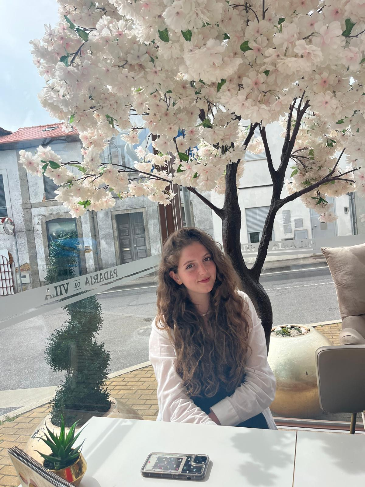
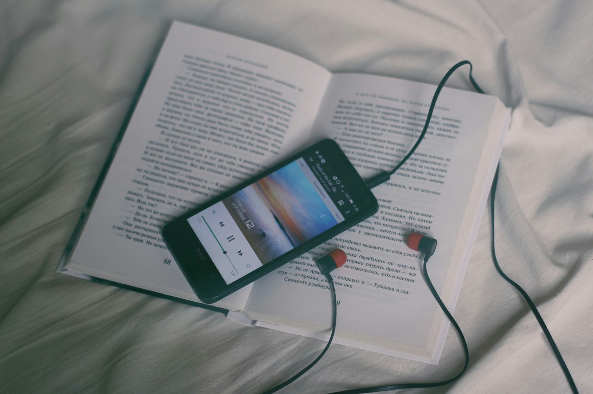
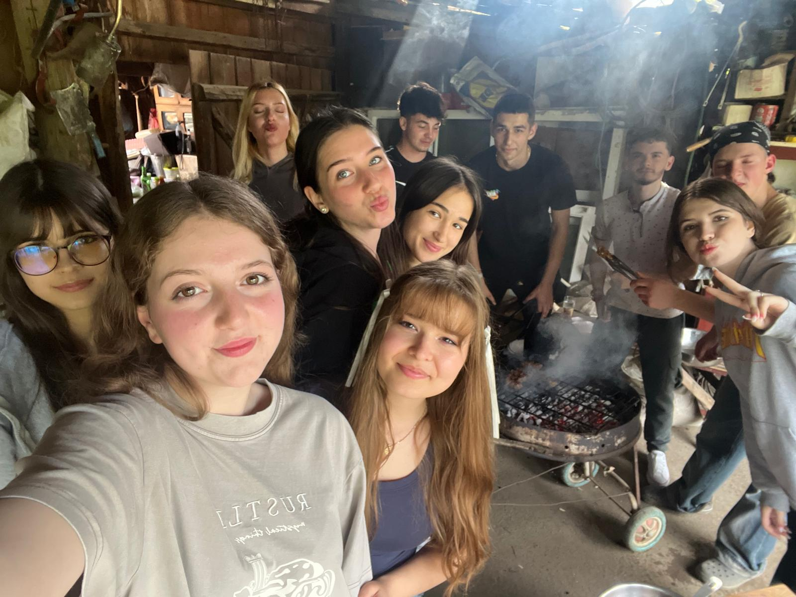

Welcome to
My Digital Journey
Welcome to my portfolio! As a passionate web designer and developer, I’m thrilled to showcase my journey, projects, and skills here. Each project featured on this site is a testament to my creativity and technical prowess, reflecting my dedication to transforming ideas into functional and visually stunning websites.

About Me

My Hobbies
For about six years, I have started reading more than I ever expected. The book series that made me develop this hobby is Harry Potter, and since then I can't stop. When I immerse myself in the pages of a book, I feel like I can finally escape the stress I feel every day and relax by pretending I am the main character in a fictional world.
Another activity that holds a special place in my heart is handball. Although I no longer practice it, it was an important part of my life for six years. I learned what teamwork and trust mean, experienced the happy moments of victory, and the disappointment that came with losing a game. It was also where I met some of my best friends, who have always been by my side, and I learned that everything is easier when you are not alone.
Free Time
When I'm not at school, I like to spend my free time with my group of friends. The activities aren't important because I know I will always feel integrated and any problem will disappear with my friends' jokes (sometimes not so funny). If someone had told me two years ago who my group of friends would be, I wouldn't have believed them. We are so different in many ways, but just as the saying goes, "opposites attract," together we have managed to form a small family that I am proud to be a part of. I know that in years to come, I will look back on these moments with joy.
